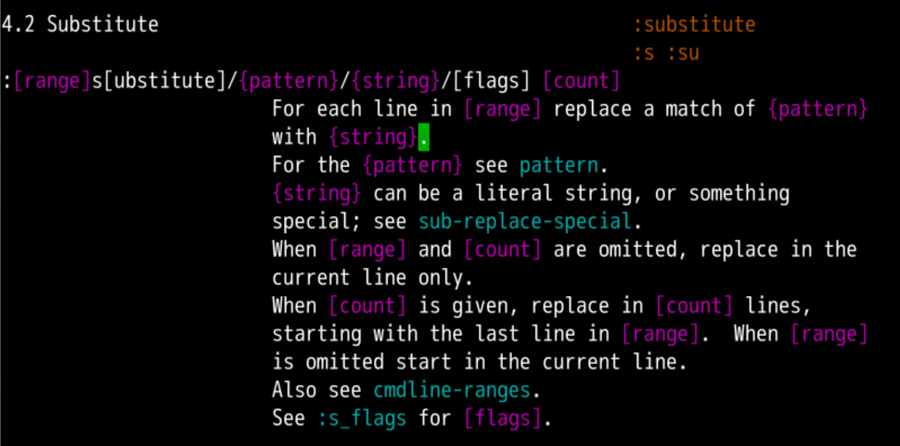
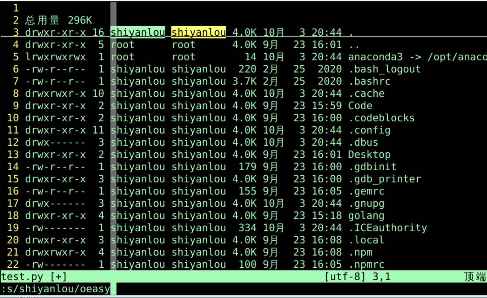
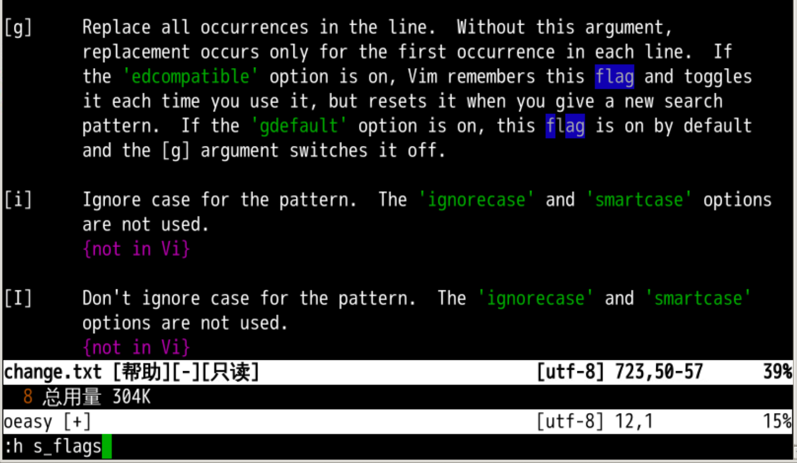
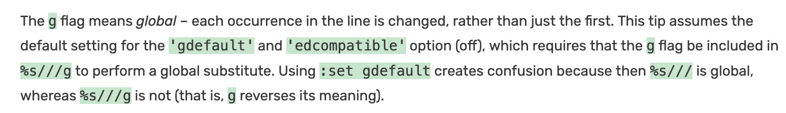
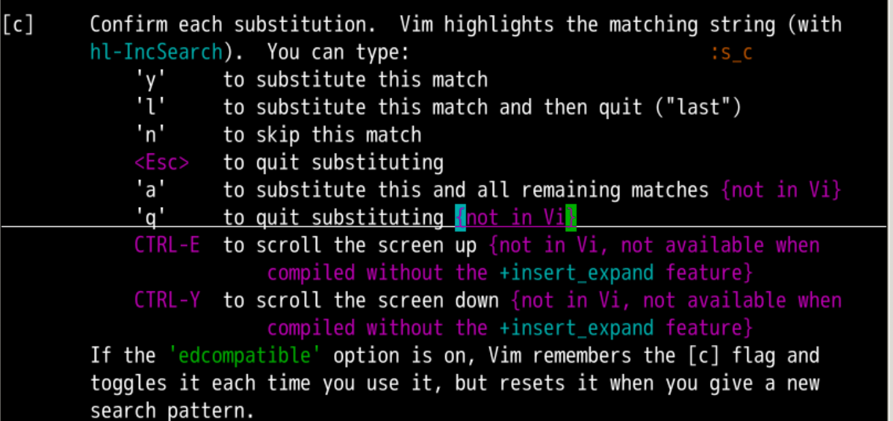
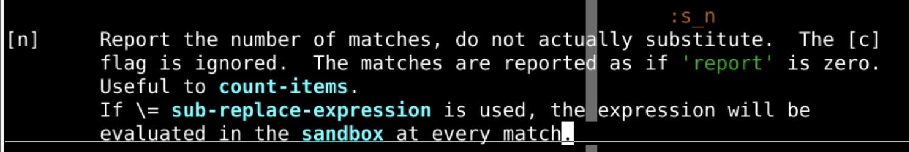
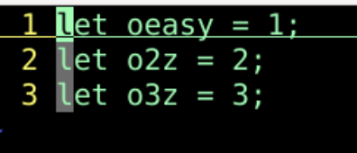
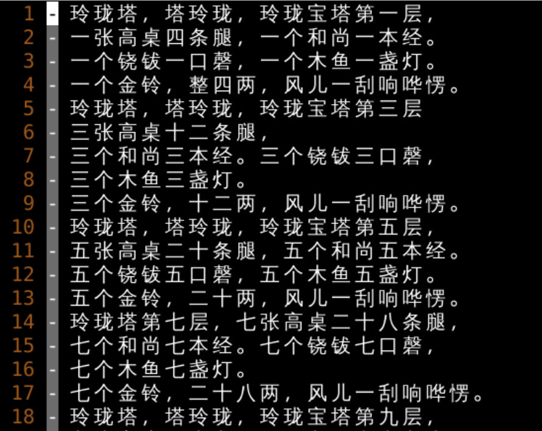
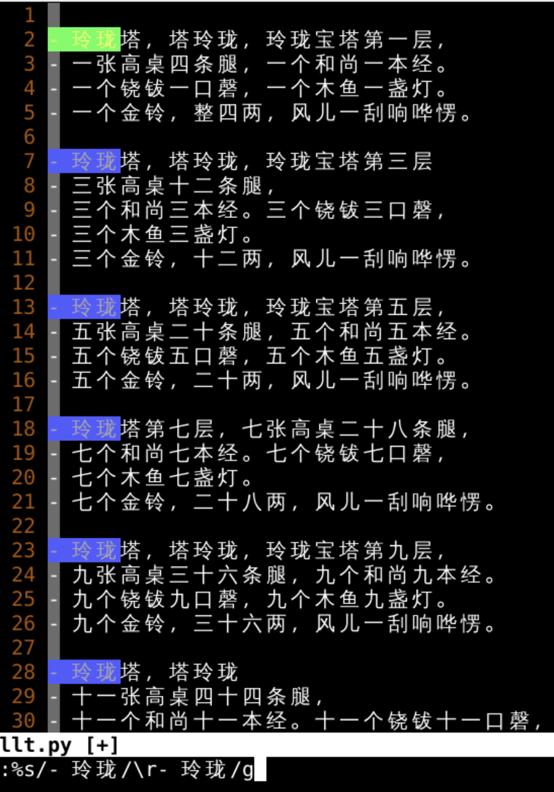

查找细节
回忆上节课内容🤔
- 我们温习了关于搜索的相关内容
- /正向，?反向
- n保持方向，N改变方向
- 可以设置
- 是否忽略大写小写
- 是否从头开始查找
- 是否高亮显示
- 还有一些正则表达式的使用方法
- 行头行尾
^$ - 词头词尾
\<\> - 字符列表
[a-z]、[A-Za-z_] - 包含回车
one\_stwo
- 行头行尾
- 数量
- 数量
*、?、= - 具体数量
\{1,3} - 非贪婪
\{-}
- 数量
- 不以什么为开头结尾
- 不以什么为开头
\@<! - 不以什么为结尾
\@!
- 不以什么为开头
- 查找出来怎么替换呢？🤔
查找手册📕
:h :s

:s命令 对应的是substitude替换- 我们先做个实验环境
:r !ls -lah
具体操作

- 3G跳转到第三行
:s/shiyanlou/oeasy- 把当前行(第三行)的
shiyanlou换成oeasy
- 把当前行(第三行)的
- 我想在同一行里面再换下一个
- 就可以:⬆️
- 找到上一条命令
- 然后再回车执行
- 我想把下一行的
2个oeasy一把都换掉 - 这就要加
flag
添加flag
- 哪个
flag呢？ - 我们可以在
:h :s的时候，使用/flag - 也可以
:h s_flags

- 我们这次的flag是
g- 换一行
:s/shiyanlou/oeasy/g- 可以把这一行所有的
shiyanlou换成oeasy - 我理解这个g指的是行内所有的
- 如果我想默认g-flag就开着呢？
默认g-flag

- 如果
:se gdefault- 可以设置
g为默认
- 可以设置
- 但是这个只能替换一行
- 我想在某些行的范围内替换怎么办呢？
- 加
range
添加range
- 精准控制
:3,8s/shiyanlou/oeasy/g- 只替换3-8行的
- 而且开了
gflag - 3,8行
- 每行的都全部替换
-
全部替换
%相当于1,$:%s/shiyanlou/oeasy/g:1,$s/shiyanlou/oeasy/g- 就会把所有的都替换了
-
但是这个一把都替换了
- 有的时候我还是想具体一个个确认怎么办？

逐个确认

:h s_flags找到一个cc的意思是confirm确认
:%s/shiyanlou/oeasy/gc- 行里的都替换
- 每一个都需要确认
- 每个逐个确认
- y替换当前匹配
- l替换当前匹配，并退出
- n跳过当前匹配
- esc直接退出
- q直接退出
- a全部替换
- 体会一下
a的快乐😛 - 除了g和c之外还有什么flag呢？
n

- n的作用就是计数
- 并不替换
- 但是可以统计数量
:%s/oeasy//gn- 话说回来，关于替换有什么小技巧么？
小技巧

/let- 搜索let
cwconstesc- 把当前单词变成const
- 跳
- n跳过当前匹配
- n再跳过当前匹配
- n还跳过当前匹配
- N往回跳
-
重做
- .
- 需要替换的就替换
- n
- 需要跳过的就跳过
- N
- 跳错了就跳回来
- .
-
如果遇到了转义字符应该怎么办呢？
转义字符
- 比如我希望在所有玲珑塔的前面添加回车

- 回车在这里用的是转义字符\r

- 我们来总结一下
总结
- 我们学习了
- 替换
substitude
- 替换
- 替换单行
:s/shiyanlou/oeasy
- 加上
range:3,5s/shiyanlou/oeasy:%s/shiyanlou/oeasy
- 加上
flag:3,5s/shiyanlou/oeasy/g多个替换:3,5s/shiyanlou/oeasy/gc多个替换且逐个确认
- 替换还是很方便的
- 但是我想替换中使用正则表达式
- 可以么？🤔
- 下次再说 👋